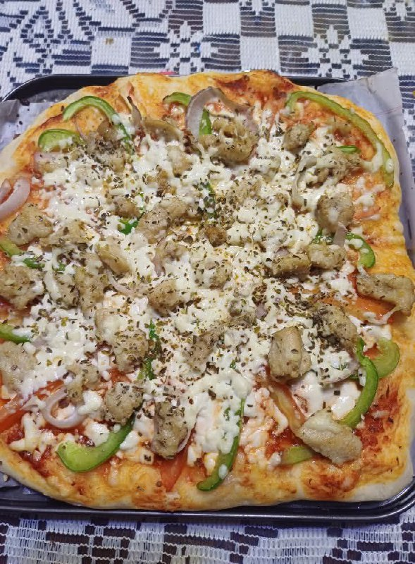

Margherita Pizza
A simple and classic Margherita pizza — fresh tomato, mozzarella, and basil. Crispy crust, gooey cheese, and bright flavors.
Ingredients
- 1 pizza dough (store-bought or homemade, ~250-300g)
- 1/2 cup tomato sauce (seasoned)
- 1 1/2 cups shredded mozzarella cheese
- 1-2 ripe tomatoes, thinly sliced (optional)
- Fresh basil leaves
- 2 tbsp olive oil
- Salt and black pepper to taste
- Optional: a pinch of dried oregano or red pepper flakes
Instructions
- Preheat your oven to 250°C (480°F) or as hot as it goes. If you have a pizza stone, place it inside while preheating.
- On a lightly floured surface, stretch or roll the pizza dough into a 10-12 inch round. Transfer to a piece of parchment or a floured peel.
- Spread the tomato sauce evenly over the dough, leaving a small border for the crust.
- Scatter the shredded mozzarella over the sauce. If using tomato slices, arrange them on top.
- Drizzle olive oil lightly over the pizza and season with a pinch of salt and black pepper (and oregano if using).
- Bake in the preheated oven on the stone or a baking tray for 8-12 minutes, or until the crust is golden and the cheese is bubbling and slightly browned.
- Remove from oven, scatter fresh basil leaves on top, and drizzle a little extra olive oil if desired. Let the pizza rest 1-2 minutes, slice, and serve hot.